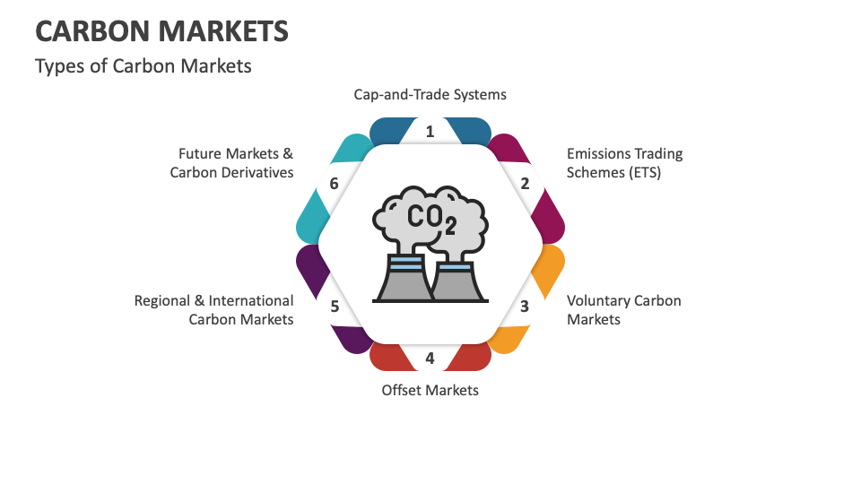

To define the Carbon Market:
A carbon market is a system where carbon emission allowances or credits are bought and sold to incentivize the reduction of greenhouse gas emissions.
How Carbon Markets Work:
- Setting a Cap: Regulatory bodies establish a limit on total emissions for a company, sector, or region.
- Issuing Allowances: Entities receive or purchase allowances, each permitting the emission of one metric ton of CO₂ or equivalent.
- Trading: Companies that emit less than their allowance can sell surplus credits to those exceeding their limits, creating a financial incentive to reduce emissions
- Monitoring and Compliance: Emissions are measured and regulated, with penalties for exceeding allowances, ensuring the system drives real reductions
Where is the Carbon Market Today?
Carbon market support spans Europe, North America, Asia, Latin America, and parts of Africa and the Middle East. The EU, UK, Australia, New Zealand, Canada, and the US are leading compliance markets, while emerging economies like India, Vietnam, and Brazil are expanding participation. International cooperation under Article 6 is growing rapidly, enabling cross-border carbon credit trading to support climate targets.